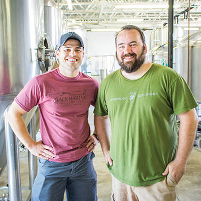
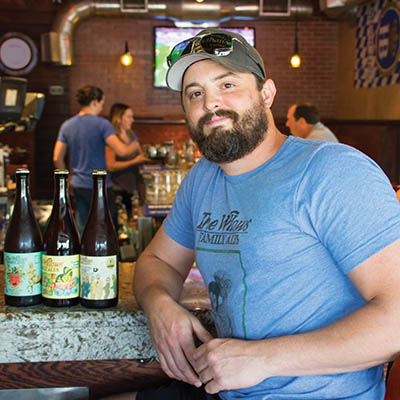
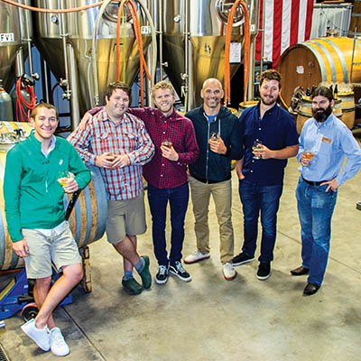
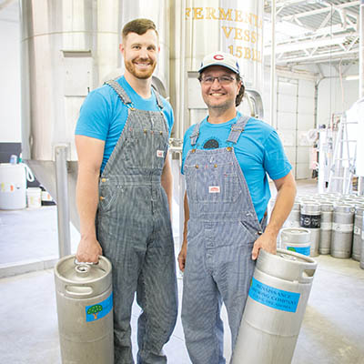

Local craft
Catching up with Tulsa’s brewmasters

Prairie Artisan Ales
Michelle Pollard
Tulsa’s craft brewers are on a mission: bringing more beer lovers into the craft beer fold and introducing Tulsans to hops, flavors and colors they’ll never get in a Budweiser.
They are following a nationwide surge of craft breweries.
In 2012, the Brewers Association reported about 2,400 craft breweries in the United States. By 2015, that number grew to 4,200 small and independent breweries.
Oklahoma now has more than a dozen, according to the Brewers Association. A handful are housed in Tulsa.
With all the breweries, though, craft beer still accounts for only about 12 percent of the U.S. beer market. However, it is more akin to the beer early Americans drank.
Why are the vast majority of today’s commercial beers sweet and yellow? Blame Prohibition and soda pop, says Wes Alexander, who teaches a course called “Introduction to Malted Beverages” at Oklahoma State University and also works at Marshall Brewing Co.
From 1920-1933, alcohol was illegal, so soda pop became the most popular drink in America.
Once brewers began producing beers again in the 1930s, the traditional European ales and lagers were no longer appealing to American taste buds, Alexander says.
That’s when commercial beers became sweet, light and highly fizzy, just like soda pop, he says.
Now that craft brews are catching on, brewers face the challenge of educating consumers and teaching them to appreciate stronger flavors.
“It’s an opportunity for us all to convert more craft drinkers,” Alexander says.
Dead Armadillo

Tony Peck was in Chanute, Kansas, to help his family clean out an old shed.
As he was moving some lumber, between two pieces of wood, he discovered a perfectly preserved dead armadillo. He joked about what a funny name that would be for his planned brewery, and he added Dead Armadillo to a page-long list of names he was considering.
A few weeks later, Dead Armadillo emerged as the winning name.
Peck, who is the brewery’s co-owner and managing partner, says the company started as a contract brewer in an Oklahoma City facility. In November 2014, it began renovations at East Fourth Street and South Madison Avenue, in a 7,000-square-foot former garage in what used to be the Fourth Street Auto building.
By September 2015, the facility brewed its first batches.
Peck still has a “day job” as a database programmer for Midstates Petroleum. One of two full-time employees is Director of Operations Todd Phillips, who handles marketing, daily operations and the taproom.
No doubt about it, most fans of Dead Armadillo Craft Brewing are humans, but the brewery even has a following of four-legged fans: Rex Koelsch’s 25 head of dairy cattle that live on Tulsa’s west side. Every week or so, Koelsch picks up 700-800 pounds of spent grain, which is the wet grain left after the sugar is removed on its way to becoming beer. The cows, Koelsch says, love eating the grain and drinking the water, which provides them with extra protein.
Nothing, it seems, goes to waste in a local brewery.
Dead Armadillo produces three year-round varieties and has created three special releases to date.
Keep an eye on dabrewery.com for information about hours for the taproom at 1002 E. Fourth St.
BREWER REC:
Dead Armadillo’s Amber Ale is by far its most popular brew as the brewery sells at least five times more of it than its other two beers combined.
It appeals to a wide variety of tastes because of its notes of caramel sweetness and a slightly bitter taste from the hops, Phillips says, describing it as medium-bodied with a clean, easy finish. The head on the beer is slightly off-white and laces down the glass throughout the drinking experience.
The secret is London ale yeast, which provides depth, complexity and fruitiness, Phillips says.
“We make beer that we like,” Phillips says, “but of course, we want to make beers that others like, too. We try to strike a balance between obscure and complicated but still enjoyable to drink.”
The Willows Family Ales

Owner and brewmaster Heath Glover loves to make beers that he describes as crazy and wild.
He uses Brettanomyces, a wild cousin of traditional brewers’ yeast. It can produce unpredictable fermentations, and most brewers avoid it for fear it will take over the tanks and change their traditional recipes.
But not Glover.
“We tend to brew on the fringe,” he says. “If you’d try rattlesnake jerky, that’s where we’re at.”
When he started brewing, he worked closely with Chase Healey at Prairie Artisan Ales and produced 60-100 barrels a year.
Unfortunately for Oklahoma, Glover is moving production this year to a facility in Wisconsin, where he plans to produce about 1,000 barrels annually and where the brews will be canned instead of bottled. Cans are lighter, which reduces transportation costs; allow in no light or air; and can be taken to places like the beach, where glass bottles might not be allowed, Glover says.
But the main reason he’s moving, besides a significant increase in production volume, is that most brewers don’t want to work with Brettanomyces, fearing other brews will become contaminated and their taste affected.
The Wisconsin company, Glover says, was willing to take on the wild yeast and the canning process. He hopes to open a smaller facility in Tulsa in the future.
Whatever bottles of The Willows Family Ales remain will continue to be sold at local bars and liquor stores, and will be replaced with the new cans this summer, Glover says.
To keep up with Willows news, stay tuned to the company’s Facebook page at facebook.com/thewillowsbeer.
BREWER REC:
Because of the company’s very small output, inventory moves quickly and unpredictably. Beer drinkers have to be willing to try whatever is left at the liquor store. “Whatever they can find in the wild is the best way to approach it,” Glover says.
Prairie Artisan Ales

If you’re looking to try lots of different beers, Prairie Artisan Ales is the brand for you.
Brothers Chase and Colin Healey started with a simple farmhouse ale that grew into a line of four year-round beers plus at least one new beer every month.
“When it’s gone, we move on to something new,” says Wes Morrison, the company’s sales director. “Part of the popularity of our brand is that you always have something new to look forward to.”
In the company’s three and a half years, it has spread to 25 states, with about 10,000 barrels per year produced primarily at the Krebs Brewing Co. in Krebs, Oklahoma, with a smaller facility in west Tulsa.
The Tulsa facility at 1803 S. 49th W. Ave. has a taproom open Wednesdays, Fridays and Saturdays. In May the company also opened a beer hall, Prairie Brewpub, at 223 N. Main St., where it features 24 taps, with 10-12 varieties of Prairie beers, plus other local favorites.
For all the latest Prairie news and to discover the latest creations, go to prairieales.com.
BREWER REC:
Morrison says Prairie Vous Francais, a light table beer, is a solid gateway beer for wine drinkers or those accustomed to commercial beers. It is crisp and not overly hopped.
Rather than having carbonation added by a machine, the beer is
bottle-conditioned, which means that the bubbles come from a secondary fermentation that occurs in the bottle.
The Prairie Vous Francais is available in 24-ounce bottles at Whole Foods Market, at the west Tulsa brewery and at the brewpub.
Marshall Brewing Co.

When Eric Marshall was growing up, his father, David, and brother, Adam, were home brewers.
But he fell in love with craft brewing as a profession as a University of Tulsa international business and German language student living in Germany.
There, during his junior year of college, he saw that every town and region had pride in its own beer, and he wanted to bring that culture back to Tulsa.
After graduating from TU, Eric returned to Germany and enrolled in the dual degree program with the World Brewing Academy, a partnership between Doemens Academy in Munich and Siebel Institute of Technology in Chicago. After completing that program, he stayed in Germany for three years and apprenticed at six breweries.
In 2007, Eric formed Marshall Brewing Co. and he purchased the former Hesselbein Tire warehouse at East Sixth Street and South Wheeling Avenue. By April 2008, the company had produced its first batch of beer, and on May 15, 2008, the first three kegs were sold at a craft brew festival in front of downtown Tulsa pub McNellie’s.
Today, Marshall Brewing has nine employees and sells beers across Oklahoma, Kansas, Missouri and Arkansas.
“People who get into craft beer start a journey,” says Wes Alexander, Marshall’s director of sales. “It’s not only a social experience of sharing beer and knowledge. It’s a journey of starting with a wheat beer and maybe moving into an amber or a pale ale.
“And the next thing you know, they’re looking for the hoppier beers before going to barrel-aged Russian imperial stouts. It’s a common journey for the American craft beer drinker.”
Today, young people have grown up alongside the craft beer movement, so many of them are knowledgeable about the ingredients and beer-making processes, he says, noting the knowledge will help the craft movement continue to grow in popularity.
The Marshall Sixth Street Session Room is open from 3-6 p.m., Thursday, and noon-7 p.m., Friday.
One Saturday per month, Marshall offers tours of the brewery, and Fridays usually feature a food truck outside.
For a list of Marshall’s year-round and seasonal beers, as well as tour and taproom schedules, visit marshallbrewing.com.
BREWER REC:
For a beginner, Alexander recommends the Marshall Sundown Wheat, which he says is a highly drinkable beer that helps bridge the gap between commercial and craft beers. It has a bit of orange peel and coriander, and it’s soft and easy drinking.
“The Bud-Miller-Coors drinkers enjoy this beer,” he says.
A more experienced craft beer aficionado might enjoy the Old Pavilion Pilsner, which was inspired by Eric Marshall’s time in Germany. Crisp and clean with a distinct hop flavor and aroma, this beer is brewed in the North German Pils style.
Renaissance Brewing Co.

When Glenn Hall decided to build a brewery, he became as much of an expert in city permitting and zoning as in hops and yeast.
According to the city’s zoning code, breweries are allowed only in industrial-zoned areas. So, when Hall bought three dilapidated houses at East 12th Street and South Lewis Avenue in 2011 and 2012 with the goal of using the land for a brewery, he knew that the zoning would have to be changed.
That started a two-year process with three appearances before the Tulsa Metropolitan Area Planning Commission and three more in front of the City Council before his plan for the zoning variance was approved.
When it is built and producing by the end of the year, Renaissance will be the first brewery to make full-strength beer in an area of the city zoned as commercial instead of industrial. It will be a 1920s-style brick and steel building with 3,000 square feet devoted to the brewery, 2,000 to retail businesses and 2,000 to two upstairs apartments.
The process of changing the zoning was “not for the faint of heart,” Hall says, but all the work was worth the satisfaction of building a showpiece for the Renaissance Neighborhood, between East 11th and 15th streets and between Harvard and Lewis avenues, where Hall also lives.
“My main focus is my neighborhood,” Hall says. “I’m building a neighborhood brewery, and I’m building it (the brand awareness) one block at a time.”
That neighborhood concept means employing local workers and giving his spent grains to a neighborhood chicken farmer.
While it’s a for-profit venture, “All of our money will go back into the local community,” Hall says. “Friends, family and then neighbors —— I’ve always lived my life like that.”
Until the building is finished, Hall is brewing at his Renaissance Neighborhood home. Homebrewers are only allowed to make 200 gallons a year and are not allowed to sell it. He makes 20-gallon batches, which take two to four weeks, and gives it away — typically at one or two private functions monthly like nonprofit events, weddings, parties or personal favors each month to build brand awareness.
Keep tabs on when the brewery will open at renaissancebeer.com.
Until then, Hall stays busy giving away beer.
BREWER REC:
Hall has a four-point guide for beer newbies who want to experience his craft beers.
1. Renaissance Gold: A light and clean German-style golden ale. Hall says it’s a great gateway for those who are used to commercial brews.
2. Indian Wheat: A beer born in the 1990s when Hall and his wife, Sarah, went on a Sunday night date at an Indian restaurant in Norman. That’s where they fell in love with this beer’s secret ingredient, cardamom, and Indian Wheat is still Sarah’s favorite.
3. Gamma Ray IPA: This India Pale Ale contains plenty of hops, so Hall says it will taste nothing like a commercial beer, but it’s not as offending or overly hoppy as many India Pale Ales on the market today.
4. Black Gold: This is the final level for craft aficionados, according to Hall. It’s a hybrid stout inspired by the English and Irish varieties. Roasted malt gives it a chocolaty goodness.
Road trip
Take the short drive from Tulsa to these regional destinations.
COOP Ale Works
Taproom is open from 4-6 p.m., Fridays, and 1-5 p.m., Saturdays. Sample up to 12 ounces of high-point beer, and buy pints, pitchers and growlers of low-point beer. Every week, taproom manager Aaron Cross creates specialty low-point beers that are only available in the taproom. Free tours are offered at 2 and 3 p.m. on Saturdays.
4745 Council Heights Road, Oklahoma City, Oklahoma; 405-842-2667, coopaleworks.com
Choc Beer Co. and Pete’s Place
The Choc Room features 16 handcrafted beers on draft. Enjoy the original Choc beer, an unfiltered wheat, or try the Miner’s Golden Ale, an American lager, or the refreshingly citric Peach Ale. Or, experience what’s new on the rotating taps, both from Choc and other guest breweries.
120 S.W. Eighth St., Krebs, Oklahoma; 918-423-2042, chocbeer.com or petes.org
Fayetteville Ale Trail
The Fayetteville Visitors Center offers a passport that visitors can have stamped on a self-guided tour of the city’s nine breweries.
Fayetteville Visitors Center, 21 S. Block Ave., Fayetteville, Arkansas, 479-521-5776, fayettevillealetrail.com
Boulevard Brewing Co.
This Kansas City brewery offers free public tours and free samples. The Tasting Room is open seven days a week, from 11 a.m.-4 p.m.
2501 Southwest Blvd., Kansas City, Missouri; 816-474-7095, boulevard.com
Beer on the books
Oklahomans are a step closer to having a say in modernizing the state’s alcohol laws.
If Senate Joint Resolution 68 passes the Legislature, Oklahomans could vote this November to change the bulk of the state’s alcohol laws.
Oklahoma is one of five states that sells beer and malt beverages comprised of no more than 3.2 percent alcohol by weight. This low-point beer is currently sold refrigerated in grocery and convenience stores. Stronger beer, wine and liquor can only be sold in liquor stores at room temperature.
Oklahoma’s laws also prevent breweries from serving their strong beer on their own premises, instead forcing them to sell low-point varieties in their taprooms and sending strong beer to distributors to be sold in bars and liquor stores.
The League of Oklahomans for Change in Alcohol Laws, usually called the LOCAL movement, says breweries should be allowed to sell their strong beer varieties in their own taprooms, just as wineries are allowed to sell wines on their premises. Wineries successfully lobbied for policy changes back in the early 2000s, so now it’s beer’s turn.
LOCAL also supports a brewery’s right to self-distribute its own product, the ability for liquor stores and breweries to sell cold beer and the sale of strong beers at convenience stores and groceries, says LOCAL’s Oklahoma City representative Sean McCanne.
“We want to see craft beer flourish in the state,” McCanne says.
If the law seems confusing, it is — even for the professionals who brew beer every day.
“In Oklahoma, it’s almost impossible to understand,” says Marshall Brewing Co.’s WesAlexander. “Would you tell a bakery they couldn’t sell their own bread? That a customer couldn’t buy a fresh baguette?”
The Retail Liquor Association of Oklahoma opposes portions of SJR 68.
The association supports a brewery’s right to sell its own single-strength products on premises, just like wineries do. However, the association’s president, Bryan Kerr, says SJR 68 would be a safety hazard because people under the age of 21 could stock, sell, buy or steal strong beers or wine in convenience stores. Of course, buying or stealing any beer underage is a crime. However, members support allowing strong beer at all outlets and are in favor of a limited grocery store rollout of wine licenses, but want to increase supervision and put other measures in place.
Additionally, Kerr estimates that if SJR 68 passes as written, 300 of the state’s 680 liquor stores would go out of business. This estimate is based on the number of liquor stores per capita in Texas, which has similar laws to those outlined in SJR 68.
The measure would allow liquor stores to sell ice, limes, corkscrews and other accessories currently not allowed at liquor stores; however, the addition of these products would not make up for the lost beer and wine sales due to competition with grocery and convenience stores, Kerr says. In late April, SJR 68 passed the Oklahoma House and was in conference committee as of press time.
If the measure passes the full House and Senate, it will go to the governor for her signature. Then, since the measure, if approved, would change the state’s constitution, the question would be voted on in November.
In case the measure fails, two initiative petitions seeking modernization could be circulated as backups before the November election. One of those, which was promoted by the Retail Liquor Association, was struck down by the Oklahoma Supreme Court in May. Another petition by Oklahomans for Consumer Freedom is still alive.
“We want to keep everyone at the table,” McCanne says. “Compromises will have to be made, but we want to see everyone get what they want.”
This article originally ran in the June issue of TulsaPeople.
.jpg)
.jpg)